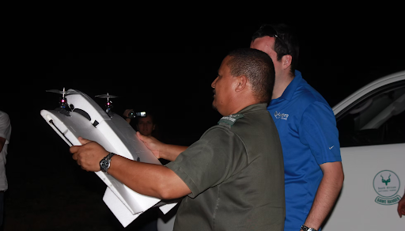

Kenya, Africa
UAV in Africa

This was our first major project, bringing unmanned aerial vehicles (UAVs) into Africa's anti-poaching efforts. Teams from various continents helped design drones to patrol terrain, detect poachers, and support rangers in the field.